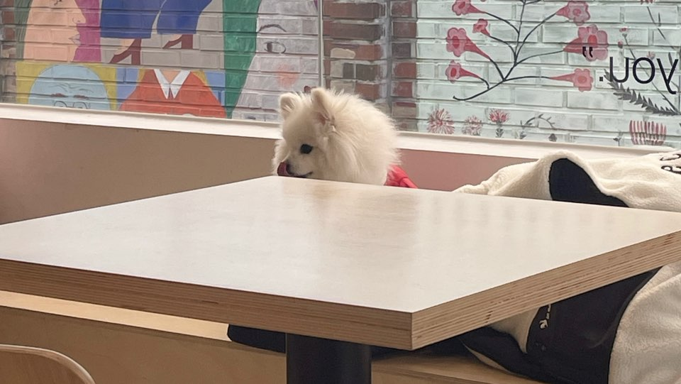

강아지
반려동물 동반이 가능한 카페에서 본 빨간색 옷을 입은 포메라니안 강아지이다. 나는 본가인 경주에서 3년 동안 말티즈인 강아지 땅콩이를 키우고 있다. 하지만 기숙사로 오면서부턴 매일 보던 땅콩이를 볼 수 없게 되었다. 그래서 보고 싶은 마음이 커 지나가다 강아지만 보이면 땅콩이 생각이 나서 나도 모르게 쳐다보게 된다. 땅콩이는 겁이 많고 아직 3살 밖에 되지 않아 사회성이 부족한 편이다. 그래서 산책을 하다가도 다른 강아지만 보면 겁을 먹고 무서워한다. 이 때문에 기숙사에 오기 전에도 땅콩이 때문에 길을 걷다가도 다른 강아지 신경을 많이 쓰곤 했었다.